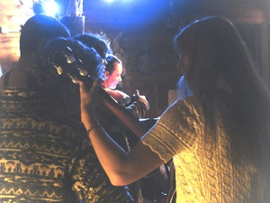
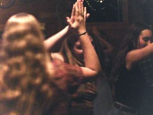
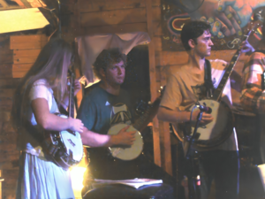
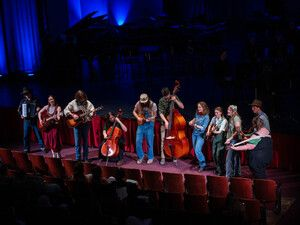
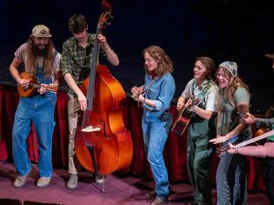

Roots 2026 Blog Page
Information About Roots and our Whereabouts
Roots is a class and club within the Univeristy of Montana dedicated to the practice of old time, Appalachian, bluegrass, and blues songs that deserve to keep their place in the modern day. More of the younger generation is showing interest in this integral genre of music, and it's our job to help them find their place and connect with others. We learn rhythm and solos, practice different kinds of instruments, and host square dances that both students and the community can engage in. We hope to carry on musical traditions for many years to come.

Gallery




